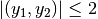

dipy.core.geometry¶
Utility functions for algebra etc
-
dipy.core.geometry.cart2sphere(x, y, z)¶ Return angles for Cartesian 3D coordinates x, y, and z
See doc for
sphere2cartfor angle conventions and derivation of the formulae. and
and 
Parameters: x : array_like
x coordinate in Cartesian space
y : array_like
y coordinate in Cartesian space
z : array_like
z coordinate
Returns: r : array
radius
theta : array
inclination (polar) angle
phi : array
azimuth angle
-
dipy.core.geometry.cart_distance(pts1, pts2)¶ Cartesian distance between pts1 and pts2
If either of pts1 or pts2 is 2D, then we take the first dimension to index points, and the second indexes coordinate. More generally, we take the last dimension to be the coordinate dimension.
Parameters: pts1 : (N,R) or (R,) array_like
where N is the number of points and R is the number of coordinates defining a point (
R==3for 3D)pts2 : (N,R) or (R,) array_like
where N is the number of points and R is the number of coordinates defining a point (
R==3for 3D). It should be possible to broadcast pts1 against pts2Returns: d : (N,) or (0,) array
Cartesian distances between corresponding points in pts1 and pts2
See also
sphere_distance- distance between points on sphere surface
Examples
>>> cart_distance([0,0,0], [0,0,3]) 3.0
-
dipy.core.geometry.circumradius(a, b, c)¶ a, b and c are 3-dimensional vectors which are the vertices of a triangle. The function returns the circumradius of the triangle, i.e the radius of the smallest circle that can contain the triangle. In the degenerate case when the 3 points are collinear it returns half the distance between the furthest apart points.
Parameters: a, b, c : (3,) array_like
the three vertices of the triangle
Returns: circumradius : float
the desired circumradius
-
dipy.core.geometry.compose_matrix(scale=None, shear=None, angles=None, translate=None, perspective=None)¶ Return 4x4 transformation matrix from sequence of transformations.
Code modified from the work of Christoph Gohlke link provided here http://www.lfd.uci.edu/~gohlke/code/transformations.py.html
This is the inverse of the
decompose_matrixfunction.Parameters: scale : (3,) array_like
Scaling factors.
shear : array_like
Shear factors for x-y, x-z, y-z axes.
angles : array_like
Euler angles about static x, y, z axes.
translate : array_like
Translation vector along x, y, z axes.
perspective : array_like
Perspective partition of matrix.
Returns: matrix : 4x4 array
Examples
>>> import math >>> import numpy as np >>> import dipy.core.geometry as gm >>> scale = np.random.random(3) - 0.5 >>> shear = np.random.random(3) - 0.5 >>> angles = (np.random.random(3) - 0.5) * (2*math.pi) >>> trans = np.random.random(3) - 0.5 >>> persp = np.random.random(4) - 0.5 >>> M0 = gm.compose_matrix(scale, shear, angles, trans, persp)
-
dipy.core.geometry.decompose_matrix(matrix)¶ Return sequence of transformations from transformation matrix.
Code modified from the excellent work of Christoph Gohlke link provided here http://www.lfd.uci.edu/~gohlke/code/transformations.py.html
Parameters: matrix : array_like
Non-degenerative homogeneous transformation matrix
Returns: scale : (3,) ndarray
Three scaling factors.
shear : (3,) ndarray
Shear factors for x-y, x-z, y-z axes.
angles : (3,) ndarray
Euler angles about static x, y, z axes.
translate : (3,) ndarray
Translation vector along x, y, z axes.
perspective : ndarray
Perspective partition of matrix.
Raises: ValueError :
If matrix is of wrong type or degenerative.
Examples
>>> import numpy as np >>> T0=np.diag([2,1,1,1]) >>> scale, shear, angles, trans, persp = decompose_matrix(T0)
-
dipy.core.geometry.euler_matrix(ai, aj, ak, axes='sxyz')¶ Return homogeneous rotation matrix from Euler angles and axis sequence.
Code modified from the work of Christoph Gohlke link provided here http://www.lfd.uci.edu/~gohlke/code/transformations.py.html
Parameters: ai, aj, ak : Euler’s roll, pitch and yaw angles
axes : One of 24 axis sequences as string or encoded tuple
Returns: matrix : ndarray (4, 4)
Code modified from the work of Christoph Gohlke link provided here :
http://www.lfd.uci.edu/~gohlke/code/transformations.py.html :
Examples
>>> import numpy >>> R = euler_matrix(1, 2, 3, 'syxz') >>> numpy.allclose(numpy.sum(R[0]), -1.34786452) True >>> R = euler_matrix(1, 2, 3, (0, 1, 0, 1)) >>> numpy.allclose(numpy.sum(R[0]), -0.383436184) True >>> ai, aj, ak = (4.0*math.pi) * (numpy.random.random(3) - 0.5) >>> for axes in _AXES2TUPLE.keys(): ... R = euler_matrix(ai, aj, ak, axes) >>> for axes in _TUPLE2AXES.keys(): ... R = euler_matrix(ai, aj, ak, axes)
-
dipy.core.geometry.lambert_equal_area_projection_cart(x, y, z)¶ Lambert Equal Area Projection from cartesian vector to plane
Return positions in
 plane corresponding to the
directions of the vectors with cartesian coordinates xyz under the
Lambert Equal Area Projection mapping (see Mardia and Jupp (2000),
Directional Statistics, p. 161).
plane corresponding to the
directions of the vectors with cartesian coordinates xyz under the
Lambert Equal Area Projection mapping (see Mardia and Jupp (2000),
Directional Statistics, p. 161).The Lambert EAP maps the upper hemisphere to the planar disc of radius 1 and the lower hemisphere to the planar annulus between radii 1 and 2, The Lambert EAP maps the upper hemisphere to the planar disc of radius 1 and the lower hemisphere to the planar annulus between radii 1 and 2. and vice versa.
See doc for
sphere2cartfor angle conventionsParameters: x : array_like
x coordinate in Cartesion space
y : array_like
y coordinate in Cartesian space
z : array_like
z coordinate
Returns: y : (N,2) array
planar coordinates of points following mapping by Lambert’s EAP.
-
dipy.core.geometry.lambert_equal_area_projection_polar(theta, phi)¶ Lambert Equal Area Projection from polar sphere to plane
Return positions in (y1,y2) plane corresponding to the points with polar coordinates (theta, phi) on the unit sphere, under the Lambert Equal Area Projection mapping (see Mardia and Jupp (2000), Directional Statistics, p. 161).
See doc for
sphere2cartfor angle conventions and
and - 
The Lambert EAP maps the upper hemisphere to the planar disc of radius 1 and the lower hemisphere to the planar annulus between radii 1 and 2, and vice versa.
Parameters: theta : array_like
theta spherical coordinates
phi : array_like
phi spherical coordinates
Returns: y : (N,2) array
planar coordinates of points following mapping by Lambert’s EAP.
-
dipy.core.geometry.nearest_pos_semi_def(B)¶ Least squares positive semi-definite tensor estimation
Parameters: B : (3,3) array_like
B matrix - symmetric. We do not check the symmetry.
Returns: npds : (3,3) array
Estimated nearest positive semi-definite array to matrix B.
References
[R22] Niethammer M, San Jose Estepar R, Bouix S, Shenton M, Westin CF. On diffusion tensor estimation. Conf Proc IEEE Eng Med Biol Soc. 2006;1:2622-5. PubMed PMID: 17946125; PubMed Central PMCID: PMC2791793. Examples
>>> B = np.diag([1, 1, -1]) >>> nearest_pos_semi_def(B) array([[ 0.75, 0. , 0. ], [ 0. , 0.75, 0. ], [ 0. , 0. , 0. ]])
-
dipy.core.geometry.normalized_vector(vec, axis=-1)¶ Return vector divided by its Euclidean (L2) norm
See unit vector and Euclidean norm
Parameters: vec : array_like shape (3,)
Returns: nvec : array shape (3,)
vector divided by L2 norm
Examples
>>> vec = [1, 2, 3] >>> l2n = np.sqrt(np.dot(vec, vec)) >>> nvec = normalized_vector(vec) >>> np.allclose(np.array(vec) / l2n, nvec) True >>> vec = np.array([[1, 2, 3]]) >>> vec.shape (1, 3) >>> normalized_vector(vec).shape (1, 3)
-
dipy.core.geometry.rodriguez_axis_rotation(r, theta)¶ Rodriguez formula
Rotation matrix for rotation around axis r for angle theta.
The rotation matrix is given by the Rodrigues formula:
R = Id + sin(theta)*Sn + (1-cos(theta))*Sn^2
with:
0 -nz ny Sn = nz 0 -nx -ny nx 0where n = r / ||r||
In case the angle ||r|| is very small, the above formula may lead to numerical instabilities. We instead use a Taylor expansion around theta=0:
R = I + sin(theta)/tetha Sr + (1-cos(theta))/teta2 Sr^2
leading to:
R = I + (1-theta2/6)*Sr + (1/2-theta2/24)*Sr^2
Parameters: r : array_like shape (3,), axis
theta : float, angle in degrees
Returns: R : array, shape (3,3), rotation matrix
Examples
>>> import numpy as np >>> from dipy.core.geometry import rodriguez_axis_rotation >>> v=np.array([0,0,1]) >>> u=np.array([1,0,0]) >>> R=rodriguez_axis_rotation(v,40) >>> ur=np.dot(R,u) >>> np.round(np.rad2deg(np.arccos(np.dot(ur,u)))) 40.0
-
dipy.core.geometry.sph2latlon(theta, phi)¶ Convert spherical coordinates to latitude and longitude.
Returns: lat, lon : ndarray
Latitude and longitude.
-
dipy.core.geometry.sphere2cart(r, theta, phi)¶ Spherical to Cartesian coordinates
This is the standard physics convention where theta is the inclination (polar) angle, and phi is the azimuth angle.
Imagine a sphere with center (0,0,0). Orient it with the z axis running south-north, the y axis running west-east and the x axis from posterior to anterior. theta (the inclination angle) is the angle to rotate from the z-axis (the zenith) around the y-axis, towards the x axis. Thus the rotation is counter-clockwise from the point of view of positive y. phi (azimuth) gives the angle of rotation around the z-axis towards the y axis. The rotation is counter-clockwise from the point of view of positive z.
Equivalently, given a point P on the sphere, with coordinates x, y, z, theta is the angle between P and the z-axis, and phi is the angle between the projection of P onto the XY plane, and the X axis.
Geographical nomenclature designates theta as ‘co-latitude’, and phi as ‘longitude’
Parameters: r : array_like
radius
theta : array_like
inclination or polar angle
phi : array_like
azimuth angle
Returns: x : array
x coordinate(s) in Cartesion space
y : array
y coordinate(s) in Cartesian space
z : array
z coordinate
Notes
See these pages:
- http://en.wikipedia.org/wiki/Spherical_coordinate_system
- http://mathworld.wolfram.com/SphericalCoordinates.html
for excellent discussion of the many different conventions possible. Here we use the physics conventions, used in the wikipedia page.
Derivations of the formulae are simple. Consider a vector x, y, z of length r (norm of x, y, z). The inclination angle (theta) can be found from: cos(theta) == z / r -> z == r * cos(theta). This gives the hypotenuse of the projection onto the XY plane, which we will call Q. Q == r*sin(theta). Now x / Q == cos(phi) -> x == r * sin(theta) * cos(phi) and so on.
We have deliberately named this function
sphere2cartrather thansph2cartto distinguish it from the Matlab function of that name, because the Matlab function uses an unusual convention for the angles that we did not want to replicate. The Matlab function is trivial to implement with the formulae given in the Matlab help.
-
dipy.core.geometry.sphere_distance(pts1, pts2, radius=None, check_radius=True)¶ Distance across sphere surface between pts1 and pts2
Parameters: pts1 : (N,R) or (R,) array_like
where N is the number of points and R is the number of coordinates defining a point (
R==3for 3D)pts2 : (N,R) or (R,) array_like
where N is the number of points and R is the number of coordinates defining a point (
R==3for 3D). It should be possible to broadcast pts1 against pts2radius : None or float, optional
Radius of sphere. Default is to work out radius from mean of the length of each point vector
check_radius : bool, optional
If True, check if the points are on the sphere surface - i.e check if the vector lengths in pts1 and pts2 are close to radius. Default is True.
Returns: d : (N,) or (0,) array
Distances between corresponding points in pts1 and pts2 across the spherical surface, i.e. the great circle distance
See also
cart_distance- cartesian distance between points
vector_cosine- cosine of angle between vectors
Examples
>>> print '%.4f' % sphere_distance([0,1],[1,0]) 1.5708 >>> print '%.4f' % sphere_distance([0,3],[3,0]) 4.7124
-
dipy.core.geometry.vec2vec_rotmat(u, v)¶ rotation matrix from 2 unit vectors
u,v being unit 3d vectors return a 3x3 rotation matrix R than aligns u to v.
In general there are many rotations that will map u to v. If S is any rotation using v as an axis then R.S will also map u to v since (S.R)u = S(Ru) = Sv = v. The rotation R returned by vec2vec_rotmat leaves fixed the perpendicular to the plane spanned by u and v.
The transpose of R will align v to u.
Parameters: u : array, shape(3,)
v : array, shape(3,)
Returns: R : array, shape(3,3)
Examples
>>> import numpy as np >>> from dipy.core.geometry import vec2vec_rotmat >>> u=np.array([1,0,0]) >>> v=np.array([0,1,0]) >>> R=vec2vec_rotmat(u,v) >>> np.dot(R,u) array([ 0., 1., 0.]) >>> np.dot(R.T,v) array([ 1., 0., 0.])
-
dipy.core.geometry.vector_cosine(vecs1, vecs2)¶ Cosine of angle between two (sets of) vectors
The cosine of the angle between two vectors
v1andv2is given by the inner product ofv1andv2divided by the product of the vector lengths:v_cos = np.inner(v1, v2) / (np.sqrt(np.sum(v1**2)) * np.sqrt(np.sum(v2**2)))
Parameters: vecs1 : (N, R) or (R,) array_like
N vectors (as rows) or single vector. Vectors have R elements.
vecs1 : (N, R) or (R,) array_like
N vectors (as rows) or single vector. Vectors have R elements. It should be possible to broadcast vecs1 against vecs2
Returns: vcos : (N,) or (0,) array
Vector cosines. To get the angles you will need
np.arccosNotes
The vector cosine will be the same as the correlation only if all the input vectors have zero mean.
-
dipy.core.geometry.vector_norm(vec, axis=-1, keepdims=False)¶ Return vector Euclidean (L2) norm
See unit vector and Euclidean norm
Parameters: vec : array_like
Vectors to norm.
axis : int
Axis over which to norm. By default norm over last axis. If axis is None, vec if flattened then normed.
keepdims : bool
If True, the output will have the same number of dimensions as vec, with shape 1 on axis.
Returns: norm : array
Euclidean norms of vectors.
Examples
>>> import numpy as np >>> vec = [[8, 15, 0], [0, 36, 77]] >>> vector_norm(vec) array([ 17., 85.]) >>> vector_norm(vec, keepdims=True) array([[ 17.], [ 85.]]) >>> vector_norm(vec, axis=0) array([ 8., 39., 77.])